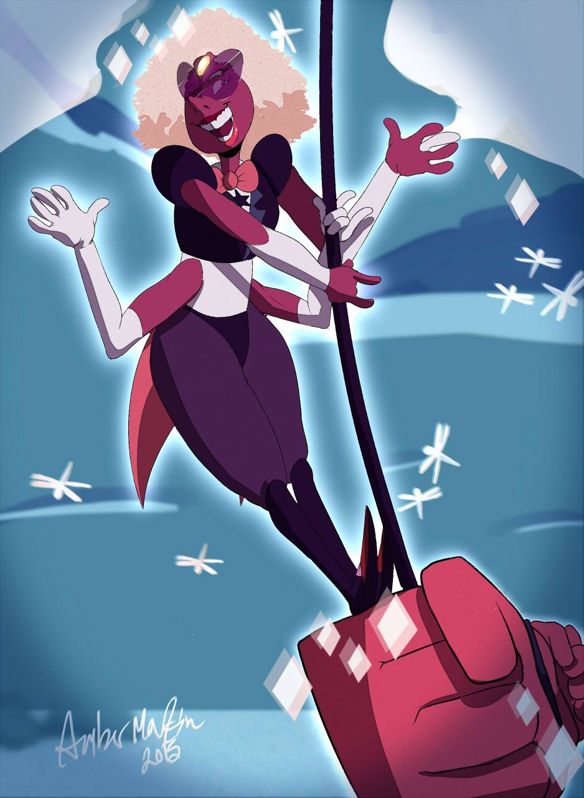
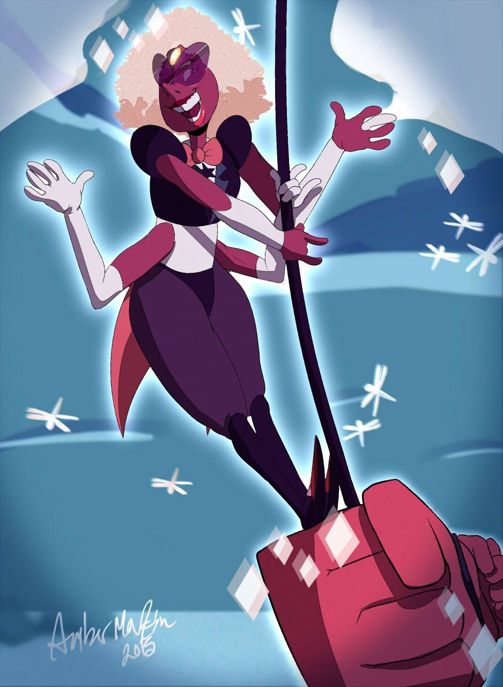
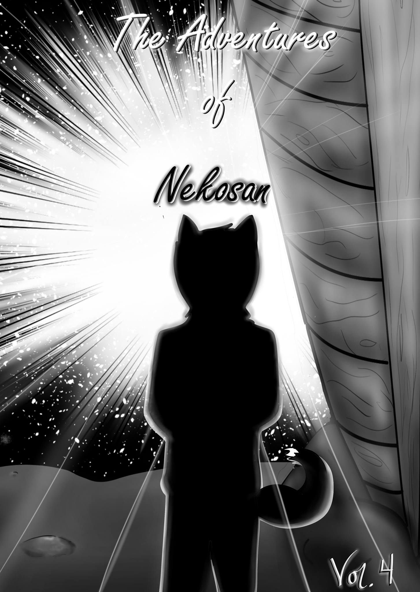

Vendors
Whether they're selling art, handmade trinkets, figures, or comics, there's something for everyone in our vendor area!

Each year, Woo-Con has had a Vendor's area, where congoers can buy unique nerd memorobilia, art, handmade trinkets, and even snacks! There is something for everyone.
Vendor List
We are fortunate enough to have a ton of talented vendors each year, and this year is no exception! Here is a list of the vendors we have so far, in no particular order.
The Master's Stash Comics

Located in Wooster, OH, the Master's Stash comic shops carries tons of comics, both for hardcore collectors and casual readers. Check out their Facebook page for more information!
It's MEH! All Things Nerdy

Back again this year for a Woo-Con round two, It's MEH! Is a shop selling figurines, collectibles, gaming merchandise, and much more! They will also be running a D&D Podcast at the convention, so check that out as well. We're glad to have them back for a round 2! Their new Facebook page (and maybe new name) are under construction at the moment, so we will change this bio as needed to reflect any changes. Check out their podcast here.
Nerdy Patisserie

Run by College of Wooster student Haley Tolle ('17). A food stand with heart, Nerdy Patisserie has plenty of delicious treats to tickle your sweet tooth! Come check them out!
Paper Craft
Operated by College of Wooster student Sharron Osterman ('17), this shop specializes in origami. With plenty of options ranging from the traditional paper cranes to paper ornaments of flowers and geometric shapes, the gorgeous papercraft will blow you away.
Servant of Art
Operated by College of Wooster student Herokazu Endo ('17). This shop specializes in intricately detailed hand-painted plastic miniatures, brilliant sketches, and beautiful paintings. Check out Hero's handiwork by visiting his booth at the con!
Knitwit Nerd Knits

Operated by College of Wooster student Tara Keller ('18), this shop features tons of hand-crafted crochet and knit items. This shop will be featured for part of the day, so don't miss it when it's set up! Whether you're looking for a cute plush, a chic hat, or even a scarf (because who doesn't love scarves), Knitwit Nerd Knits has something for everone! Check out her Etsy page here.
Go Figure!

Operated by College of Wooster student Mel Kadish ('19), this shop features handmade figurines and jewelry. With tons of fandom options and styles, we figure you should check this shop out! (badum-tss)
Brendan Walsh

From Los Angeles, CA, Brendan Walsh ('17) is a senior English major at the College of Wooster. His first novel, The Raven Gang, is available for purchase on Amazon, and will also be sold at the con in physical copies. He's also a philosopher and a recreational madman. Brendan will also be hosting a panel, so be sure to check his booth out! You can see his Amazon Author page here.
Blue Crescent Art
Operated by College of Wooster student Azul Aung ('20). This shop features manga and anime-style illustrations. Azul will also be doing a live sketching at his table throughout the day, so check out his artistic process!
MargoMundo Art & Design
 MargoMundo is a local artist in Wooster who just returned from a year abroad in Japan, and is beginning to enter the convention art scene. She specializes in traditional and digital art, and some of her favorite fandoms are Steven Universe, Sailor Moon, and Voltron: Legendary Defender. At Woo-Con, she'll be selling some phenomenal prints, stickers, and even buttons, such as the one featured here (image credit here). Check out her Facebook page here, her Instagram here, and her RedBubble here!
MargoMundo is a local artist in Wooster who just returned from a year abroad in Japan, and is beginning to enter the convention art scene. She specializes in traditional and digital art, and some of her favorite fandoms are Steven Universe, Sailor Moon, and Voltron: Legendary Defender. At Woo-Con, she'll be selling some phenomenal prints, stickers, and even buttons, such as the one featured here (image credit here). Check out her Facebook page here, her Instagram here, and her RedBubble here!
JRL Studios
JRL Studios (Joshua Lanning) is another local artist in Wooster, OH. He will be selling prints (such as the one featured above with the artist's permission), stickers, and buttons (oh my!). Also, during the convention, he would like to work on a sculpture piece. Check out his table!
MartianWorks
 

MartianWorks (Amber Martin) is a currently freelancing artist based in Wooster, Ohio, who makes illustrations, concepts, and tee-shirt designs. She also makes stickers, such as the ones featured above (image credit here), which will be available at the con, which will be her first convention as a vendor! She also will be selling prints, postcards, and acrylic charms, and sharing a booth with ScoatGoat. Check out her work here at her Facebook Page, her Tumblr, or on her TeePublic!
ScoatGoat

Hi! My name is Scott Henley (aka Scoatgoat). This is my first time as a vendor at a con. I'm a freelance Illustrator and I do character design. I also work on different posters and T-shirt designs. Tumblr: https://scoatgoat.tumblr.com/ Teepublic: https://www.teepublic.com/user/scoatgoat (Bio by ScoatGoat. Thanks, ScoatGoat!) ScoatGoat and Martianworks will be sharing a table, so be sure to check out these two awesome artists!
Glare Beware
Glare Beware was created in 2014, with "The Adventures of Nekosan", an original webcomic, being published online in February, 2015. The first web comic series is "The Adventures of Nekosan;" a collection of tales of a Yokai on an inter-dimensional journey, and all that dared to follow. Glare Beware is also home to short comics, doodles, stickers, bookmarks, postcards, commissions, and more; all of which are created by the artist, Nicole. Nicole is an artist that graduated from Baldwin-Wallace University in 2013 with her Bachelor's of the Arts in Art Education. She has an artistic background focused mostly in painting and drawing. To find out more, visit www.glarebeware.com! Nicole is also the con chair of one of our partners, the convention Gojotekicon! For more information about that awesome con, check out our Partners & Credits page!
US Anime Direct
Last but not least is our anime merchandise vendor, US Anime Direct! With merchandise for any series and for any fan, this shop has all your anime needs, when you need them! We are so excited to have them visit our convention!